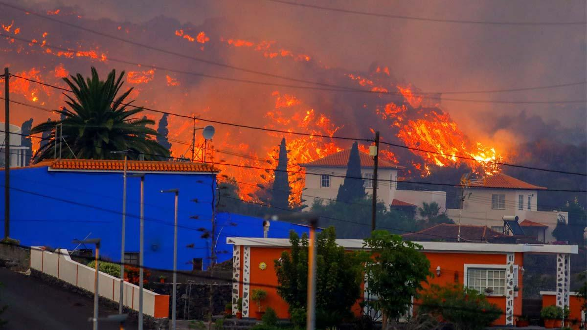

¿Que le ha pasado a nuestros compañeros?
La reciente erupción del volcán en La Palma, en las Islas Canarias, ha generado una profunda preocupación y movilización tanto a nivel local como internacional. La erupción, que comenzó el pasado 16 de Mayo, ha desencadenado flujos de lava y emisiones de gases volcánicos, obligando a la evacuación de miles de residentes y causando daños significativos en infraestructuras y propiedades.Las autoridades locales y los equipos de respuesta de emergencia han estado trabajando incansablemente para gestionar la situación y garantizar la seguridad de los afectados. Se han establecido albergues temporales y se han implementado medidas de protección civil para mitigar los riesgos y proporcionar apoyo a las personas desplazadas.

Problemas con los que se encuentran
La erupción del volcán en La Palma ha generado una serie de problemas urgentes. La evacuación de residentes, daños en infraestructuras y servicios básicos interrumpidos son preocupaciones clave. Además, la actividad volcánica plantea riesgos para la salud y el medio ambiente, y afecta sectores económicos como el turismo y la agricultura. La recuperación requerirá una respuesta coordinada para abordar los impactos humanitarios, ambientales y económicos de manera efectiva.

¿Que podemos hacer para ayudarlos?
Apoyarlos mediante donaciones
Apoyar al pueblo canario en este momento de crisis es crucial para ayudar a las comunidades afectadas por la erupción volcánica en La Palma. Tu generosidad puede marcar la diferencia proporcionando ayuda humanitaria urgente, como alimentos, agua y refugio, a los miles de residentes desplazados. Además, tu donación contribuirá a la reconstrucción de infraestructuras dañadas y a la recuperación económica de la región, ayudando a restaurar la estabilidad y el bienestar de las familias canarias. Únete a nosotros en este esfuerzo solidario y demostremos nuestra solidaridad con el pueblo canario en su momento de necesidad. Cada contribución, por pequeña que sea, cuenta y hace una diferencia real en las vidas de quienes más lo necesitan.
Apoyarlos mediante las manifestaciones
Tu apoyo a las manifestaciones en solidaridad con el pueblo canario es fundamental en este momento de necesidad. Al unirte a las protestas, estás levantando tu voz para exigir atención y acción ante la crisis provocada por la erupción volcánica en La Palma. Tu presencia demuestra solidaridad con las comunidades afectadas y ejerce presión sobre las autoridades para que proporcionen el apoyo necesario en términos de ayuda humanitaria, reconstrucción y recuperación económica. Juntos, podemos enviar un mensaje poderoso de unidad y solidaridad, mostrando al pueblo canario que no están solos en su lucha por reconstruir y recuperarse. Únete a nosotros en las manifestaciones y hagamos que nuestras voces sean escuchadas en apoyo al pueblo canario.